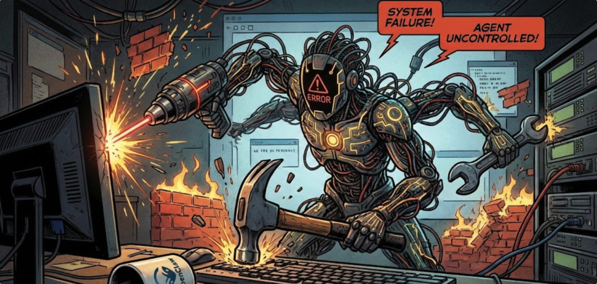
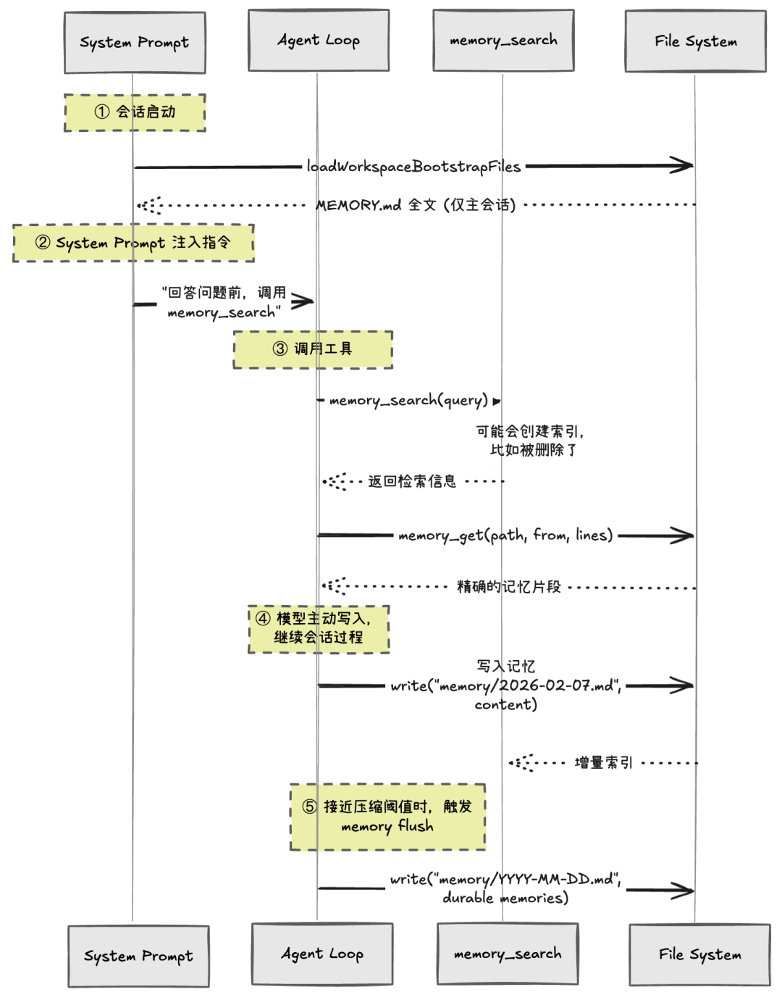
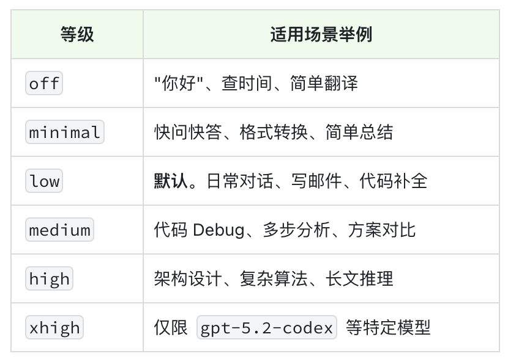
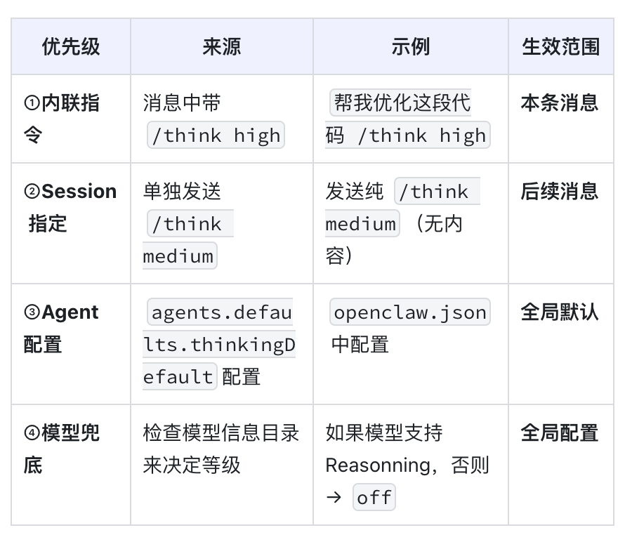
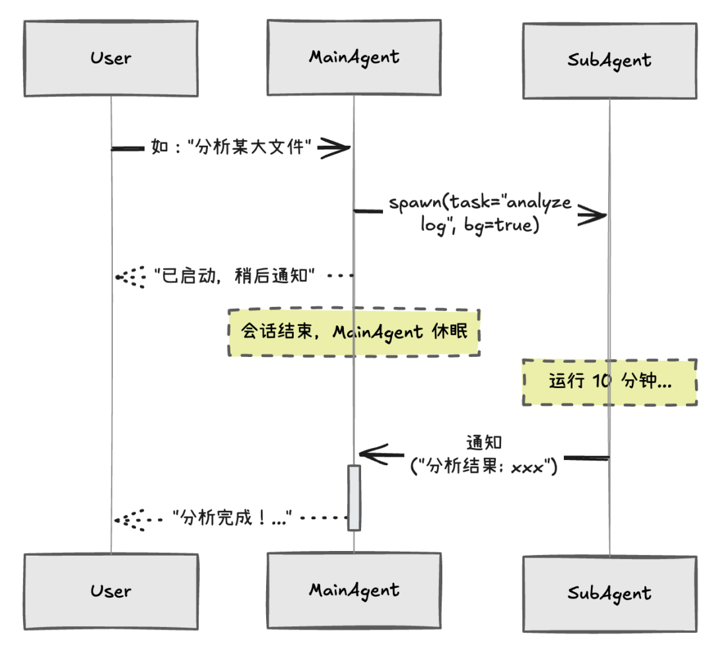

安全与风险防御
记忆与状态管理
成本与效能优化
子 Agent 协作机制


channels:
telegram:
groups:
"-100123456": # 公开群 (Public)
tools:
profile: "minimal" # 默认只读，禁止 Shell/File Write
allow: ["web_search"]
toolsBySender: # 针对特定用户的特权覆盖
"admin_user":
profile: "full" # 管理员拥有全权限
"-100987654": # 内部开发群
tools:
profile: "coding" # 允许代码执行先检查当前群组配置中的 toolsBySender 是否命中发送者 若未命中，使用群组的 tools 配置 若群组也未配置，回退到全局默认策略
它们不会出现在 Agent 上下文中（通常在System Prompt 的工具部分）
对应的工具实现函数的句柄也会被从 Agent 中移除
Agent 默认都不可信 ：最有效的防风险方式，是不给它“武器”（工具）
能用哪些工具，不由 Agent 决定： 而由授权中心（Gateway）决定
授权必须随场景实时生效 ：同一用户切换环境（比如到不同群组/任务），也必须重新计算权限
递归“炸弹” ：Subagent 再次调用 sessions_spawn ，导致无穷嵌套
越权操作 ：一些高权限任务应由主 Agent 统一协调与完成
const DEFAULT_SUBAGENT_TOOL_DENY = [
// 会话管理 — 主Agent统一协调
"sessions_list",
"sessions_history",
"sessions_send",
"sessions_spawn", // 阻止递归生成子Agent
// 系统管理
"gateway",
"agents_list",
"whatsapp_login",
// 调度与状态
"session_status",
"cron",
// 记忆
"memory_search",
"memory_get",
];if (isSubagentSessionKey(requesterSessionKey)) {
returnjsonResult({
status: "forbidden",
error: "sessions_spawn is not allowed from sub-agent sessions",
});
}每日工作记忆 ：用命名为 YYYY-MM-DD.md 的文件保存，更像“工作日志”，用于实时回顾会话过程，带时间线与上下文，允许重复。
MEMORY.md ：保存提炼后的“精华”长期记忆，比如从工作记忆中去重、归类、抽取出的关键偏好与结论，长期有效。




派生 ：主 Agent 为复杂任务派生 Subagent，并设置为后台/异步模式 通知 ：主 Agent 先回复用户“任务已启动…”，然后结束当前会话 回调 ：Subagent 任务完成后回传结果，由主 Agent 汇总并推送给用户
给出更具体的决策框架 ：补充更可执行的判断信号，例如：预估步骤数、是否包含多轮外部调用、是否需要大规模检索/爬取等。
让工具/技能给出一些“成本提示” ：比如在工具信息里增加预估耗时、复杂度等提示，并告诉模型：当任务可能涉及“慢工具”组合时则派生 Subagent。
用历史数据做校准 ：记录每次任务的输入、执行时长、成本等；新任务到来时，参考相似的历史任务来校准判断，而不是只靠模型当时的直觉。